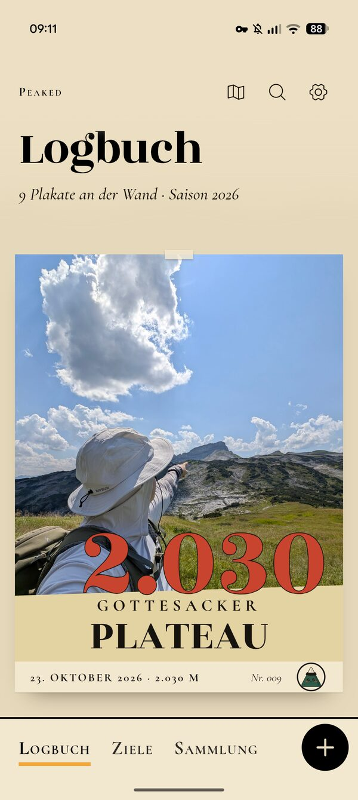

Jede App ein Gipfel.
Kleine Apps, die eine Sache richtig gut machen: fair bezahlt, ohne Datensammelei, mit Liebe gemacht. Der erste Gipfel heißt Peaked, dein Bergtagebuch.
Dev 3.100 m
Peaked, dein Bergtagebuch.
Halte Gipfel, Touren, Fotos und Erinnerungen fest. Peaked braucht kein Konto: Alles bleibt auf deinem Gerät.
- Preis
- 4,99 € einmalig, kein Abo
- Geräte
- iPhone und Android
- Deine Daten
- bleiben auf deinem Handy
- Stand
- bald im Store
Peaked plant nicht den nächsten Berg. Es bewahrt den, auf dem du schon warst.

Gipfel 02 liegt noch im Nebel. Als Erstes davon hören
Vier Regeln für jede App.
Wie die Markierung am Wanderweg: kurz, klar und für jede App gleich.
- 1.200 m
Was dir gehört, bleibt bei dir.
Kein Konto, wo keins nötig ist. Deine Touren, Fotos und Notizen liegen auf deinem Handy, nicht auf unserem Server. Verkauft wird davon nichts, nie.
- 1.850 m
Einmal zahlen. Fertig.
Was uns nichts laufend kostet, kaufst du einmal. Kostet doch etwas laufend Geld, zum Beispiel KI, sagen wir das vorher, und du kannst jederzeit kündigen.
- 2.400 m
Eine Sache, richtig gut.
Keine App für alles. Jede macht genau einen Job, macht ihn gut und lässt dich danach in Ruhe. Keine Werbung, keine nervigen Mitteilungen.
- 3.100 m
Gemacht mit Liebe zum Detail.
Schön genug, dass du gern wiederkommst. Und wer genau hinschaut, findet Dev irgendwo versteckt.
Hi, ich bin Vlad.
alatoo.dev bin im Moment nur ich. Ich baue Apps, die ich selbst gern auf dem Handy hätte: ohne Anmeldung, ohne Abo-Falle und ohne dass im Hintergrund jemand mitliest.
Der Name kommt vom Ala-Too, einem Gebirge in Kirgisistan. Darum ist diese Seite eine Karte voller Höhenlinien, und jede App ist ein Gipfel darauf.
Und Dev? Der kleine Berg mit dem Filzhut begleitet mich. Er trägt einen Kalpak, wie man ihn in Kirgisistan trägt, und passt auf, dass keine App langweilig wird.
Setz deinen Gipfel.
Wer oben ist, trägt sich ins Gipfelbuch ein. Dein Gruß wird ein kleiner Gipfel auf dieser Karte, mit deinem Namen dran.
Lieber privat? Schreib mir direkt an alatoodevv@gmail.com. Ich lese jede Nachricht selbst.